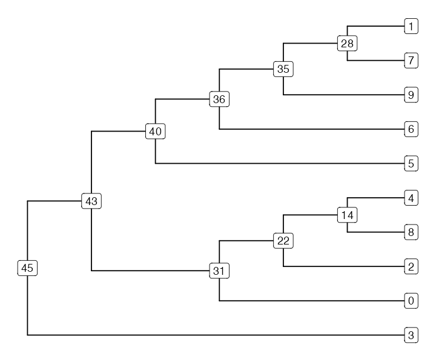
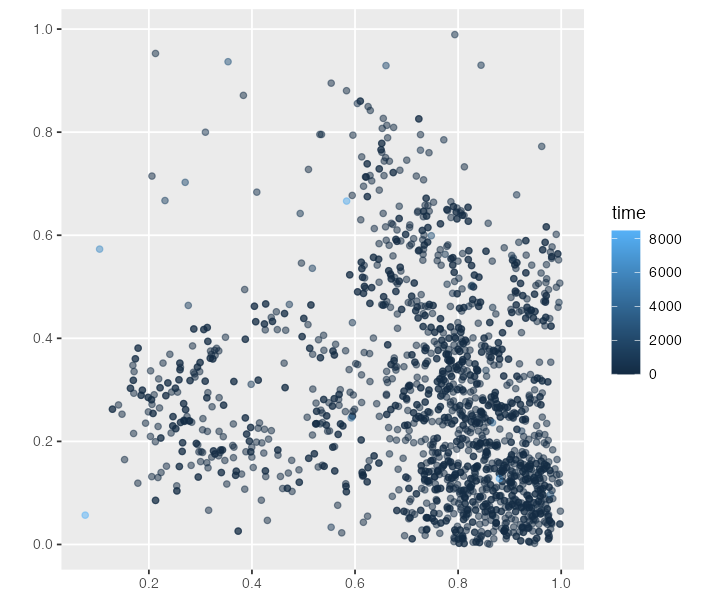
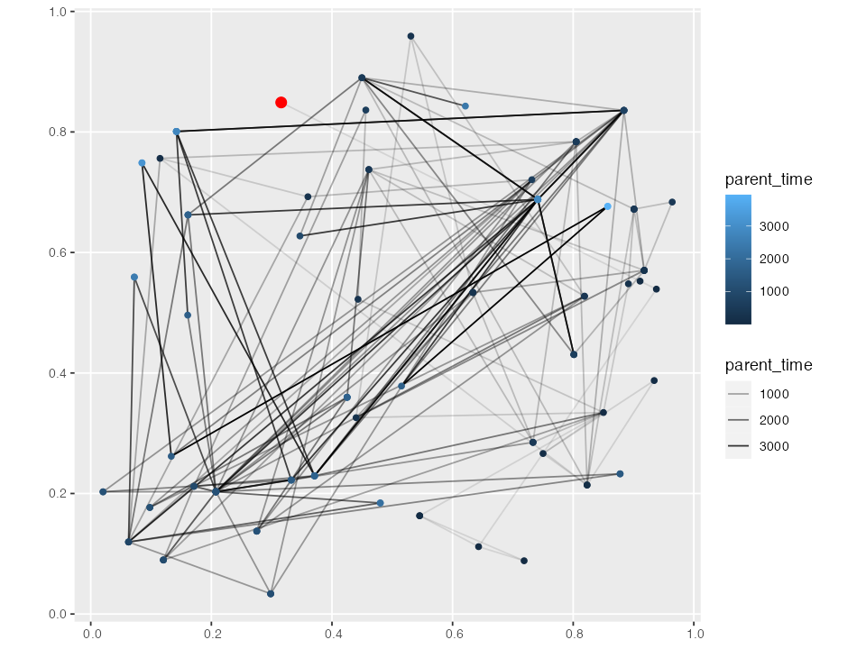

Analyzing non-slendr tree sequences
Source:vignettes/vignette-08-nonslendr-tskit.Rmd
vignette-08-nonslendr-tskit.RmdIn previous vignettes we have demonstrated the slendr R interface for defining and executing msprime and SLiM population genetic models. We have also provided an overview for its interface to the tree-sequence processing library tskit.
However, although its model-definition interface is quite convenient, slendr cannot (and never will) support every possible msprime or SLiM. model The array of features provided by these simulation frameworks is simply to big and implementing an R interface to every single one of them would not make much sense.
That said, the tree-sequence outputs produced by “pure” (i.e. non-slendr) msprime and SLiM scripts are no different from those generated by slendr models themselves. For users who would rather use their own simulation scripts but find slendr’s tskit R interface (not its simulation interface) appealing, the R package provides a possibility to load, process, visualize and analyze standard tree sequences which were not generated by slendr itself.
In this vignette we give a brief overview of how this works, using example tree sequences produced by two very simple simulation scripts written in pure SLiM and msprime (i.e. scripts which don’t utilize slendr’s spatial features, symbolic names of simulated individuals, and automated translation of time units). We won’t be going into detail explaining how those scripts work, because we assume this functionality will be used by those already familiar with msprime or SLiM. Similarly, we won’t cover the R-tskit functionality of slendr in detail either, simply because the contents of this vignette is already covered by other tutorials provided by slendr.
library(slendr)
library(dplyr)
library(magrittr)
library(ggplot2)
init_env()
SEED <- 42
set.seed(SEED)Non-spatial SLiM tree sequences
Consider the following SLiM script, which creates a couple of
populations (with different \(N_e\))
splitting from an ancestral population p1 (lets save it to
/tmp/nonspatial.slim):
initialize() {
setSeed(42);
initializeTreeSeq();
initializeMutationRate(0);
initializeMutationType("m1", 0.5, "f", 0.0);
initializeGenomicElementType("g1", m1, 1.0);
initializeGenomicElement(g1, 0, 1e6);
initializeRecombinationRate(1e-8);
}
1 early() {
sim.addSubpop("p1", 10);
}
1000 early() {
sim.addSubpopSplit("p2", 500, p1);
}
3000 early() {
sim.addSubpopSplit("p3", 2500, p1);
}
5000 early() {
sim.addSubpopSplit("p4", 10000, p1);
}
6000 late() {
sim.treeSeqOutput("/var/folders/d_/hblb15pd3b94rg0v35920wd80000gn/T//RtmplILLSA/file124d7649d2475");
}After we run this script in SLiM, we can use slendr to load
the output tree sequence (saved to
/tmp/nonspatial-slim.trees), simplify it, and overlay
mutations on it using the standard
functionality originally developed for slendr tree
sequences. Note that this is the same command we would use for loading
slendr tree sequences, except we direct the
ts_load() function straight to the tree-sequence output
file rather than using the ts_load(<model-object>)
format used when working with standard slendr simulations. This
way, slendr
ts <- ts_load(nonspatial_trees_file) %>%
ts_simplify() %>%
ts_mutate(mutation_rate = 1e-7, random_seed = SEED)We can extract information about individual’s names, nodes,
population assignments, etc. just as with any slendr tree
sequence with the function ts_nodes(). As with standard
slendr models, this function loads the “raw” node and
individual tree-sequences
tables, performs a couple of join operations, and presents the whole
thing in a nice unified form for interactive data analysis (which can
also include spatial information—see below):
data <- ts_nodes(ts) %>% dplyr::filter(sampled)
data
#> slendr 'nodes' object
#> ---------------------
#> times are expressed in a forward time direction
#>
#> summary of the table data contents:
#> p1 - 10 'sampled', 0 'remembered', 0 'retained', 10 'alive' individuals
#> p2 - 500 'sampled', 0 'remembered', 0 'retained', 500 'alive' individuals
#> p3 - 2500 'sampled', 0 'remembered', 0 'retained', 2500 'alive' individuals
#> p4 - 10000 'sampled', 0 'remembered', 0 'retained', 10000 'alive' individuals
#>
#> total:
#> - 13010 'sampled' individuals
#> - 0 'remembered' individuals
#> - 0 'retained' individuals
#> - 13010 'alive' individuals
#> ---------------------
#> oldest sampled individual: 0 time units 'before present'
#> youngest sampled individual: 0 time units 'before present'
#>
#> oldest node: 0 time units 'before present'
#> youngest node: 0 time units 'before present'
#> ---------------------
#> overview of the underlying table object:
#>
#> # A tibble: 26,020 × 11
#> pop node_id time time_tskit sampled remembe…¹ retai…² alive pedig…³ ind_id
#> <chr> <int> <dbl> <dbl[1d]> <lgl> <lgl> <lgl> <lgl> <dbl> <dbl>
#> 1 p1 0 0 0 TRUE FALSE FALSE TRUE 2.01e7 0
#> 2 p1 1 0 0 TRUE FALSE FALSE TRUE 2.01e7 0
#> 3 p1 2 0 0 TRUE FALSE FALSE TRUE 2.01e7 1
#> 4 p1 3 0 0 TRUE FALSE FALSE TRUE 2.01e7 1
#> 5 p1 4 0 0 TRUE FALSE FALSE TRUE 2.01e7 2
#> 6 p1 5 0 0 TRUE FALSE FALSE TRUE 2.01e7 2
#> 7 p1 6 0 0 TRUE FALSE FALSE TRUE 2.01e7 3
#> 8 p1 7 0 0 TRUE FALSE FALSE TRUE 2.01e7 3
#> 9 p1 8 0 0 TRUE FALSE FALSE TRUE 2.01e7 4
#> 10 p1 9 0 0 TRUE FALSE FALSE TRUE 2.01e7 4
#> # … with 26,010 more rows, 1 more variable: pop_id <int>, and abbreviated
#> # variable names ¹remembered, ²retained, ³pedigree_idMoving on to tskit statistics, we can use the data table above to
extract a list of nodes belonging to each population (this is what
various tskit tree-sequence statistics operate on, and slendr
follows that design). Here we are computing the nucleotide diversity in
each of the four populations using the ts_diversity()
function, by first creating a list of lists with node IDs
(i.e. chromosomes) of individuals in each population:
sample_sets <- split(data$node_id, data$pop)
# compute nucleotide diversity in each population
# (any other ts_*() tskit R interface function should work)
ts_diversity(ts, sample_sets)
#> # A tibble: 4 × 2
#> set diversity
#> <chr> <dbl>
#> 1 p1 0.00000755
#> 2 p2 0.000241
#> 3 p3 0.000463
#> 4 p4 0.000201Just as with slendr tree sequences (as demonstrated in our paper) we can get a individual trees too, extracted in the in the phylogenetic format provided by the ape R package. Here we first simplify the tree sequence even further to just 10 nodes to make things manageable:
samples <- sample(data$node_id, 10)
ts_small <- ts_simplify(ts, simplify_to = samples)
# extract the 42nd tree in the genealogy to an R 'phylo' format
tree <- ts_phylo(ts_small, 42)
#> Starting checking the validity of tree...
#> Found number of tips: n = 10
#> Found number of nodes: m = 9
#> Done.
tree
#>
#> Phylogenetic tree with 10 tips and 9 internal nodes.
#>
#> Tip labels:
#> 1, 0, 9, 4, 8, 7, ...
#> Node labels:
#> 45, 28, 22, 31, 35, 36, ...
#>
#> Rooted; includes branch lengths.Once we have that R tree object, we can use packages like ggtree to visualize the
tree (any other phylogenetic package would work too). Note that because
nodes of ‘ape phylo’ trees must conform to a strict format (they must be
labelled 1...N), we will extract the information about the
node IDs in the tskit tree-sequence data to be able to plot them in the
tree.
library(ggtree)
#> ggtree v3.6.2 For help: https://yulab-smu.top/treedata-book/
#>
#> If you use the ggtree package suite in published research, please cite
#> the appropriate paper(s):
#>
#> Guangchuang Yu, David Smith, Huachen Zhu, Yi Guan, Tommy Tsan-Yuk Lam.
#> ggtree: an R package for visualization and annotation of phylogenetic
#> trees with their covariates and other associated data. Methods in
#> Ecology and Evolution. 2017, 8(1):28-36. doi:10.1111/2041-210X.12628
#>
#> Guangchuang Yu. Data Integration, Manipulation and Visualization of
#> Phylogenetic Trees (1st edition). Chapman and Hall/CRC. 2022,
#> doi:10.1201/9781003279242
#>
#> LG Wang, TTY Lam, S Xu, Z Dai, L Zhou, T Feng, P Guo, CW Dunn, BR
#> Jones, T Bradley, H Zhu, Y Guan, Y Jiang, G Yu. treeio: an R package
#> for phylogenetic tree input and output with richly annotated and
#> associated data. Molecular Biology and Evolution. 2020, 37(2):599-603.
#> doi: 10.1093/molbev/msz240
#>
#> Attaching package: 'ggtree'
#> The following object is masked from 'package:magrittr':
#>
#> inset
labels <- ts_nodes(tree) %>% select(node = phylo_id, tskit_id = node_id)
ggtree(tree, branch.length = "none") %<+% labels +
geom_label(aes(label = tskit_id))
library(ape)
plot(tree, show.tip.label = FALSE)
nodelabels()
tiplabels()msprime (non-slendr) tree sequences
The same as above applies also to msprime tree sequences (which is really not that surprising, given that it’s all tskit under the hood).
We can start with Python:
import msprime
ts = msprime.sim_ancestry(100)
ts.dump(<trees file>)And then we can proceed with loading the msprime tree sequence into R and analyze it with the slendr functionality:
ts <- ts_load(msprime_trees_file)
ts_nodes(ts)
#> slendr 'nodes' object
#> ---------------------
#> times are expressed in a backward time direction
#> ---------------------
#> overview of the underlying table object:
#>
#> # A tibble: 199 × 7
#> pop ind_id node_id time time_tskit sampled pop_id
#> <chr> <dbl> <int> <dbl[1d]> <dbl[1d]> <lgl> <int>
#> 1 0 NA 0 0 0 TRUE 0
#> 2 0 NA 1 0 0 TRUE 0
#> 3 0 NA 2 0 0 TRUE 0
#> 4 0 NA 3 0 0 TRUE 0
#> 5 0 NA 4 0 0 TRUE 0
#> 6 0 NA 5 0 0 TRUE 0
#> 7 0 NA 6 0 0 TRUE 0
#> 8 0 NA 7 0 0 TRUE 0
#> 9 0 NA 8 0 0 TRUE 0
#> 10 0 NA 9 0 0 TRUE 0
#> # … with 189 more rowsSpatial SLiM (non-slendr) tree sequences
Furthermore, the generalized interface also supports slendr’s spatial tree-sequence features, with all the bells and whistles.
For instance, lets take the following spatial SLiM script (modified from the SLiM manual) and execute it with SLiM the usual way:
initialize() {
setSeed(42);
initializeSLiMOptions(keepPedigrees=T, dimensionality="xy");
initializeTreeSeq();
initializeMutationRate(1e-7);
initializeMutationType("m1", 0.5, "f", 0.0);
initializeGenomicElementType("g1", m1, 1.0);
initializeGenomicElement(g1, 0, 1e6);
initializeRecombinationRate(1e-8);
}
1 early() {
sim.addSubpop("p1", 500);
// initial positions are random in ([0,1], [0,1])
p1.individuals.x = runif(p1.individualCount);
p1.individuals.y = runif(p1.individualCount);
}
modifyChild() {
// draw a child position near the first parent, within bounds
do child.x = parent1.x + rnorm(1, 0, 0.02);
while ((child.x < 0.0) | (child.x > 1.0));
do child.y = parent1.y + rnorm(1, 0, 0.02);
while ((child.y < 0.0) | (child.y > 1.0));
return T;
}
1: late() {
sim.treeSeqRememberIndividuals(sim.subpopulations.individuals, permanent = F);
}
10000 late() {
sim.treeSeqOutput("/var/folders/d_/hblb15pd3b94rg0v35920wd80000gn/T//RtmplILLSA/file124d7293bddc1");
}We can then load and simplify the output tree sequence in just as we did above in this vignette (or anywhere in the slendr documentation):
ts <- ts_load(spatial_trees_file) %>% ts_simplify()Finally, we can access the spatio-temporal data embedded in the
output tree sequence in the standard slendr way (note the
spatial sf column
location with the POINT data type):
data <- ts_nodes(ts)
data
#> slendr 'nodes' object
#> ---------------------
#> times are expressed in a forward time direction
#>
#> summary of the table data contents:
#> p1 - 500 'sampled', 0 'remembered', 500 'retained', 500 'alive' individuals
#>
#> total:
#> - 500 'sampled' individuals
#> - 0 'remembered' individuals
#> - 895 'retained' individuals
#> - 500 'alive' individuals
#> ---------------------
#> oldest sampled individual: 0 time units 'before present'
#> youngest sampled individual: 0 time units 'before present'
#>
#> oldest node: 8463 time units 'before present'
#> youngest node: 0 time units 'before present'
#> ---------------------
#> overview of the underlying sf object:
#>
#> # A tibble: 1,955 × 12
#> pop node_id time time_…¹ location sampled remembered retai…²
#> <chr> <int> <dbl> <dbl[1> <POINT> <lgl> <lgl> <lgl>
#> 1 p1 0 0 0 (0.904485 0.0777489) TRUE FALSE TRUE
#> 2 p1 1 0 0 (0.904485 0.0777489) TRUE FALSE TRUE
#> 3 p1 2 0 0 (0.668828 0.5246381) TRUE FALSE TRUE
#> 4 p1 3 0 0 (0.668828 0.5246381) TRUE FALSE TRUE
#> 5 p1 4 0 0 (0.7707701 0.1518462) TRUE FALSE TRUE
#> 6 p1 5 0 0 (0.7707701 0.1518462) TRUE FALSE TRUE
#> 7 p1 6 0 0 (0.7617792 0.2616453) TRUE FALSE TRUE
#> 8 p1 7 0 0 (0.7617792 0.2616453) TRUE FALSE TRUE
#> 9 p1 8 0 0 (0.9807475 0.04223008) TRUE FALSE TRUE
#> 10 p1 9 0 0 (0.9807475 0.04223008) TRUE FALSE TRUE
#> # … with 1,945 more rows, 4 more variables: alive <lgl>, pedigree_id <dbl>,
#> # ind_id <dbl>, pop_id <int>, and abbreviated variable names ¹time_tskit,
#> # ²retainedBecause we get the tree sequence converted to the spatial sf data format, we can use standard geospatial packages to use any spatial data analysis methods that those packages provide.
To briefly demonstrate what this means, we can trivially plot the location of each recorded node:

We can also collect spatio-temporal ancestry information of a particular node (i.e. the times and locations of all of its ancestors all the way to the root, with each “link” in the plot signifying parent-child edge somewhere along the tree sequence) and plot it on a 2D surface (x and y dimensions [0, 1]). The plot is a little chaotic, but hopefully conveys the idea (the “focal node” 0 is highlighted in red). This is essentially the same plot we have in the last figure of our paper.
ancestral_links <- ts_ancestors(ts, 0)
ggplot() +
geom_sf(data = ancestral_links, size = 0.5, aes(alpha = parent_time)) +
geom_sf(data = sf::st_set_geometry(ancestral_links, "parent_location"), aes(color = parent_time)) +
geom_sf(data = data[data$node_id == 0, ], size = 3, color = "red")
Conclusion
In this vignette we gave a brief overview of using slendr’s R-tskit interface for loading, processing, and analyzing “pure” non-slendr tree sequences produced by msprime and SLiM scripts.
Although we have only touched upon the most basic features of its R-tskit interface for standard tree sequences, it is important to note that as far as slendr is concerned, it does not matter how a tree sequence was produced, as long as it conforms to the tskit specification. This means that regardless of the source of your tree sequence data, you should be able to use slendr’s tskit functionality to run your analyses.